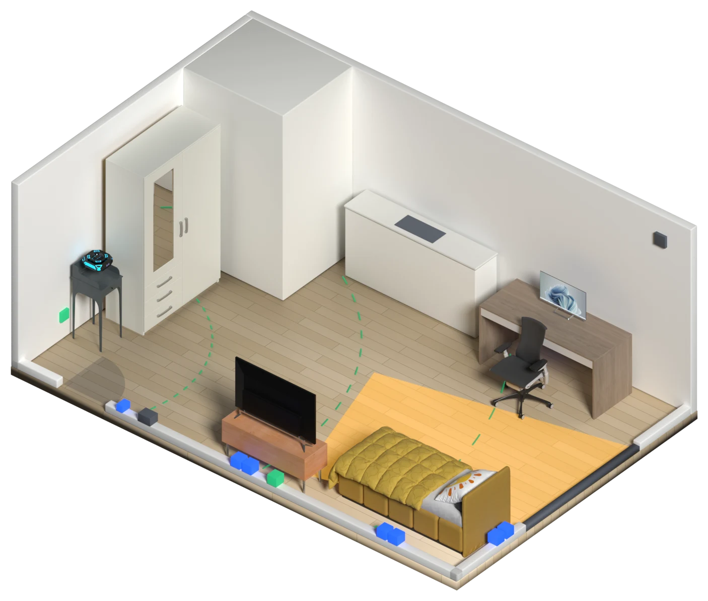
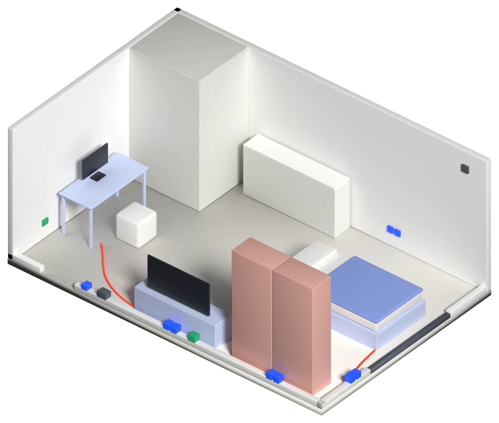
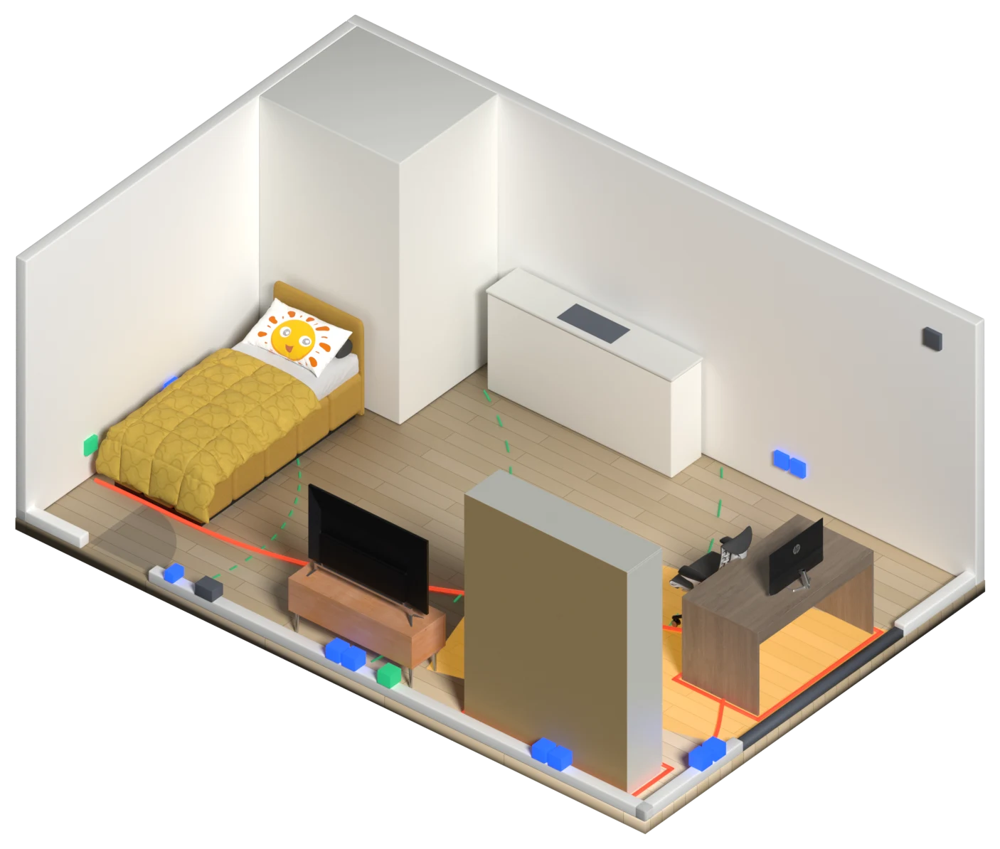

집의 벽 속까지 읽는 가구 배치
내 살림이 새집에 꽂히는 자리를 찾는다

01 · 문제
A
충전기 하나 때문에 2미터 멀티탭이 방을 가로지른다.
B
가구를 다 놓고 나서야 그 벽에 단자가 있었다는 걸 안다.
C
공유기를 거기 뒀더니 침대에서 와이파이가 끊긴다.
알았을 때는 가구가 무겁고, 조립한 가구는 반품이 안 된다. 그래서 멀티탭과 긴 선으로 버틴다.
02 · 빈자리
지금의 배치 도구
PLUGIN
03 · 속도면
04 · 꽂기


수치는 이 예시 도면에서 센 것입니다.
05 · 쓰는 순서
01
빈집을 휴대폰으로 한 바퀴 찍는다. 계약 전이어도 된다.
02
AI가 영상에서 콘센트, 단자, 설비, 햇빛을 읽어 속도면을 만든다.
03
가진 가구와 가전을 등록한다. 필요한 콘센트 수가 계산된다.
04
이유가 붙은 배치안 세 가지와, 모자란 것 목록이 나온다.
05
고른 안이 이사 업체에 배치도로 넘어가고, 번호대로 놓인다.
06 · 사용 장면
민지는 집을 보러 간 날 방을 한 바퀴 찍는다. 그날 저녁 알림이 온다.
그날 저녁
이 집은 콘센트가 한쪽 벽에 몰려 있어, 책상과 침대를 둘 다 편하게 둘 자리가 없습니다.
다음 날 본 다른 집
책상, 침대, TV 모두 벽 콘센트로 해결됩니다.
민지는 두 번째 집을 계약한다. 이삿날 기사는 배치도대로 가구를 놓고, 그날 밤 멀티탭은 한 개도 꺼내지 않는다.
07 · 세 가지 조건
공감
기술
사업
08 · 한계와 확인할 것
01
가구 뒤에 이미 가려진 콘센트는 찍히지 않는다. 빈집일 때 찍어야 한다.
02
계약 전에 찍으려면 집주인 동의가 필요하다.
03
찾아본 범위에서는 나오지 않았다. 국내외 서비스를 더 확인해야 한다.
PLUGIN